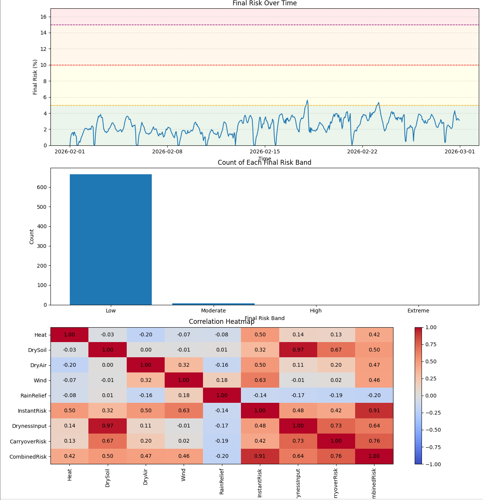

Index:
Meeting the Brief
Introduction:
This video shows my artefact in operation and demonstrates the full project pipeline: the embedded system collects local environmental and GPS data, the receiver responds automatically as the danger level changes, and the Python side cleans the logged data, uses GPS-derived latitude and longitude to request Open-Meteo data, models wildfire risk, and tests changed conditions.
Basic Requirements:
BR1 - Embedded System Design:
The video first shows the embedded system itself working. Button A is used as a digital input to start or pause monitoring, the soil moisture sensor is used as an analogue input, and the receiver Micro:bit gives a primary output through LEDs and sound. Once started, the system runs automatically and keeps responding as the conditions change.
BR2 - Data Collection:
The video then shows the system collecting and storing environmental data related to wildfire risk. The received sensor and GPS readings are logged to the computer and saved so that they can be used later in the Python model.
BR3 - Process Simulation:
The video also shows the system simulating a real-world process related to the theme, in this case wildfire risk. As the input conditions become more dangerous, the receiver updates the risk response and the alert output changes. This shows how the system behaves under changing environmental conditions.
Advanced Requirement 1 - Disaster Risk Modelling:
Function: The Python side parses GPS latitude and longitude from the logged project data, uses those coordinates to request location-based weather data from Open-Meteo, and combines that weather data with the project sensor readings to calculate wildfire risk more fully.
What it looks like in the video: The video will show the logged data being cleaned, the GPS coordinates being parsed, the additional weather data being added, the model running, and the final wildfire risk output being produced.

Advanced Requirement 2 - What-If Simulations:
Function: The same model is tested under changed environmental conditions to see how the predicted risk changes.
What it looks like in the video: The video will show a dry spell scenario and an extreme weather scenario, followed by a comparison of the outputs.


Advanced Requirement 3 - Adaptive System:
Function: The system automatically changes its response when the conditions become more dangerous.
What it looks like in the video: The video will show the risk level increasing and the system updating its alert output automatically.